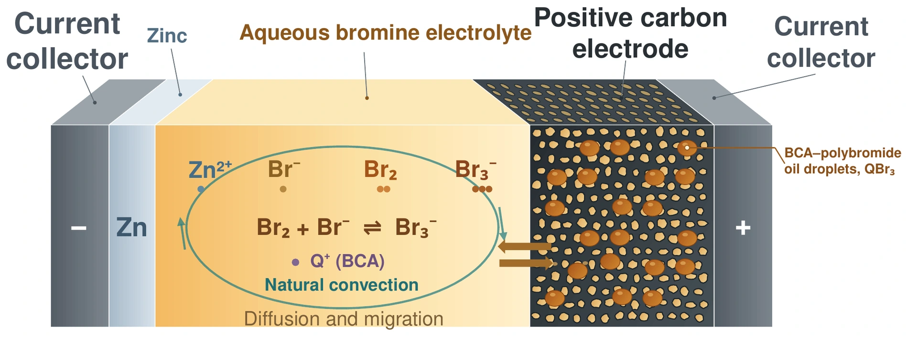
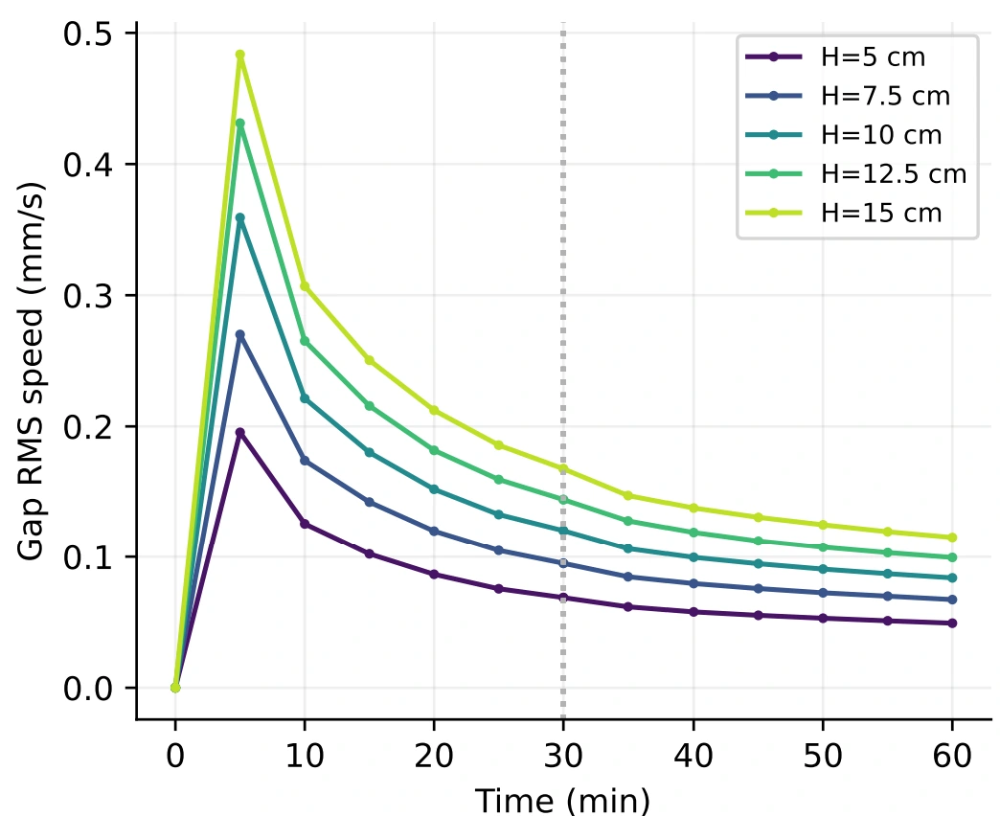

Grid energy storage
Flowless zinc–bromine batteries
Flowless, membraneless zinc–bromine cells offer a simpler architecture for stationary energy storage. I studied how electrolyte circulation and cell geometry change the way these batteries store and release charge.
Modeling a cell without a pump
I built a transient two-dimensional COMSOL model linking electrochemical reactions with ion transport and buoyancy-driven flow. The model follows zinc plating and stripping, bromine complexation and storage in porous carbon, and bromine crossover to the zinc surface.
I compared simulated voltages and resistances against published measurements from a minimal-architecture cell. At 10 mA and 20–30 mAh, the modeled open-circuit voltage was within about 1–3 mV of the reported measurements.


Faster flow made little difference to discharge energy
With the electrolyte gap fixed at 10 mm, I simulated 30 minutes of charge and 30 minutes of discharge at ±200 A/m². Raising the cell height from 5 to 15 cm more than doubled the root-mean-square electrolyte speed at the end of discharge. The modeled discharge energy stayed near 163.5 Wh/m².
- 5 cm cell at discharge end
- 0.049 mm/s
- 15 cm cell at discharge end
- 0.115 mm/s


A smaller gap changes the trade-off
At a cell height of 10 cm, narrowing the gap from 10 mm to 1 mm increased the modeled cycle energy efficiency from 89.5% to 96.9% and increased vertical zinc-ion stratification. The comparison gives two design criteria to evaluate together: electrical losses and local species depletion.
I am developing an electrode scaffold to measure how reactions vary through the positive electrode and test the spatial predictions in situ.